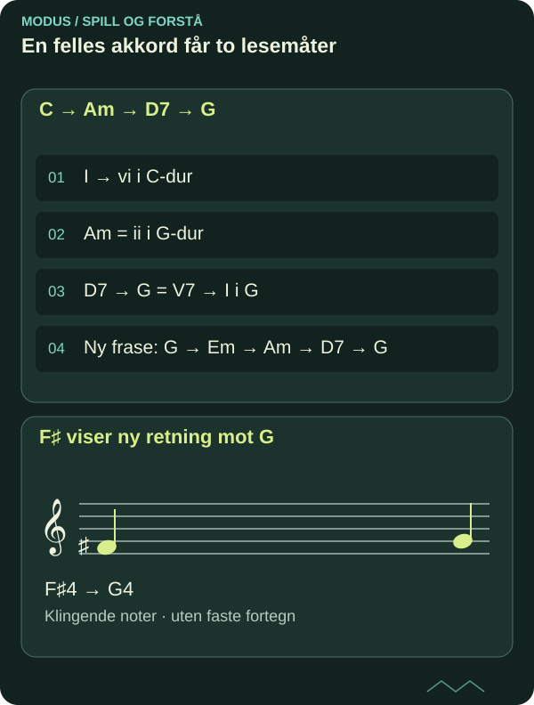

Tonikalisering og modulering: følg lokal og global tonalitet
En kromatisk akkord kan peke kort mot et mål eller åpne døren til en ny toneart. Undersøk hvordan fraser og kadenspunkter avgjør forskjellen.
DETTE LÆRER DU
Tonikalisering og modulering: følg lokal og global tonalitet
- Analysere lokal og global tonalitet.
- Konstruere en overgang med pivotakkord.

En hendelse eller et nytt hierarki?
C–D7–G–C kan fortsatt høre hjemme i C-dur. D7 er V7/V og G er en tonikalisert dominant. Hvis G derimot får en egen frase med Am–D7–G og videreføres som hjem, blir modulering til G-dur en sterkere forklaring. Et fortegn alene avgjør ikke analysen.
Skill mellom overordnet toneart, lokalt sentrum og enkeltakkordens funksjon. Skriv gjerne «C-dur, kort vekt på V» før du har hørt fortsettelsen. Å la et spørsmål stå åpent er bedre analyse enn å velge en ny toneart for hver kromatiske tone.

Les diagrammet som tekst
- C → Am → D7 → G: I → vi i C-dur; Am = ii i G-dur; D7 → G = V7 → I i G; Ny frase: G → Em → Am → D7 → G
- F♯ viser ny retning mot G: F♯4 → G4
Pivotakkorden får to lesemåter
Lag C–Am–D7–G. Am er vi i C-dur og ii i G-dur. Dermed kan den fungere som pivot, en felles akkord som leder inn i ny funksjon. Skriv begge tall under Am. D7 bekrefter ny retning med F♯.
Gi deretter G en hel firetakters frase: G–Em–Am–D7–G. Den nye tonikaen trenger tid og formmessig vekt. En pivot er ikke obligatorisk; direkte modulasjon kan bruke brått skifte. Men en felles akkord gjør overgangen mulig å følge i små stemmebevegelser.
Piano og gitar: vis selve skiftet
På piano spiller du bassen C–A–D–G og høyre hånd E–G–C, E–A–C, F♯–A–C, G–B–D. Følg F♯ mot G og C mot B i siste skifte. Spill hver linje alene.
På gitar bruker du åpne C, Am, D7 og G. Finn F♯ i D7 på første streng, bånd 2, og la den gå til G på bånd 3. Spill først melodistemmen, deretter akkordene. Ta opp samme overgang én gang med umiddelbar retur til C og én gang med videreføring i G.
Et originalt 16-takters analyseforløp
Bruk én akkord per takt: C, F, Dm, G7; C, Am, D7, G; Em, Am, D7, G; Am, D7, G, G. De første fire taktene støtter C. Takt 6 kan leses i begge tonearter. De siste åtte støtter G gjennom gjentatt ii–V–I.
Lag en egen melodi og marker konkrete kadenspunkter. Sammenlign med en variant der takt 9 blir C og slutten F–G7–C. Da får den samme D7–G-hendelsen mindre global betydning. Forklar med taktreferanser hva du hører, og transponer hele planen fra G til D som nytt mål.
Kildegrunnlag og faglig status
Original norsk MODUS-tekst med egne undervisningseksempler. Faglig referansegrunnlag for videre kontroll:
Under arbeid – ikke faglig sluttgodkjent. Artikkelen dokumenterer ingen personlig mestring og gir ingen formell studie- eller publiseringsgodkjenning. Skriftlig forklaring, faktisk spill og lytting må vurderes hver for seg.
FRA LESING TIL SPILLING
Prøv det selv.
Skriv et 16-takters forløp som etablerer en ny toneart. Lever to samtidige funksjonsanalyser ved pivoten og et opptak av en variant som bare tonikaliserer.
- Gjør et selvstendig første forsøk før du ser quizfasiten.
- Spill den konkrete modellen på gitar og piano, og lytt til forskjellen.
- Lag en ny variant og behold første og bearbeidede versjon separat.
SJEKK FORSTÅELSEN
Hva sitter igjen?
Tre spørsmål om det du har lest. Alle tre riktige gir fullført quiz. Du kan prøve så mange ganger du vil.
Fullføring lagres i denne nettleseren og deles mellom norsk og engelsk.
Du har svart riktig på alle tre spørsmålene. Ta ideen med til instrumentet.
Til artikkelbiblioteket ↗︎ANBEFALT NESTE STEG
Sekstkvartakkorder: hør hva bassen gjør
Neste del av den foreslåtte faglige ruten. Velg emner ut fra forkunnskap og behov.
Sekstkvartakkorder: hør hva bassen gjør ↗︎